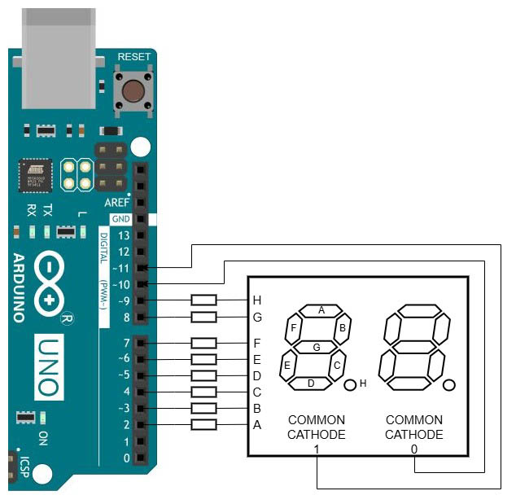

В многоразрядном индикаторе выводы одноимённых сегментов соединены внутри корпуса, наружу выведены только эти 7-8 сегментных линий и общий электрод каждого разряда. Это сокращает количество линий, используемых для управления индикатором, но усложняет управление. Такие индикаторы полноценно работают только с динамической индикацией, когда каждый разряд по очереди зажигают на короткое время, а остальные разряды гасят. Инерционность человеческого зрения создаёт иллюзию одновременного свечения всех разрядов, в каждом из которых отображается свой знак.
Динамическая индикация изучается в следующем этюде, здесь же решается подготовительная задача: зажечь на двухразрядном индикаторе нужный знак в нужном разряде, а другой разряд погасить.
Сегментные линии индикатора, как и в предыдущих этюдах, подключены к пинам 2-9 Ардуино, а общие электроды, в отличие от предыдущих этюдов, не к линиям GND или +5 В, а к пинам 10 и 11, то есть потенциалом на общих электродах тоже можно управлять. Выставив на общем электроде разряда надлежащий уровень (например, высокий на общем катоде), можно этот разряд погасить. В разряде, на общем катоде которого низкий уровень, будет отображаться знак, заданный комбинацией уровней на сегментных линиях.
Командная строка параметр=значение дополнена возможностью восприятия параметра p, указывающего активный разряд индикатора (p=0 для младшего, 1 для старшего разряда). Как и раньше, параметр m определяет режим отображения, в параметре v задаётся отображаемая информация. Например, чтобы отобразить в младшем разряде цифру, следует настроить систему на отображение с декодированием (m=0), указать разряд (p=0), а затем передать нужную цифру в параметре v, например, v=5. Чтобы отобразить некоторый знак в старшем разряде, необходимо включить отображение без декодирования (m=1), указать разряд (p=1) и передать в параметре v схему отображения знака, например, v=1000000 для знака "минус". Разряд, не указанный в команде p, при исполнении команды v будет погашен.
Управление разрядными линиями (катодами индикатора) аналогично управлению сегментными линиями — создаётся маска, в которой указывается нужная разрядная линия, и соответствующей логической операцией эта линия активируется.

Текст программы содержится в файле Ind_y_Ardu.ino, который можно получить с Github по ссылке.
Как вариант, можно получить с Github весь репозиторий цикла "Ардуино и индикаторы" и выполнить команду
git restore -s 2dig01 -- Ind_y_Ardu.ino
Файл Ind_y_Ardu.ino в рабочей области будет перезаписан требуемой версией.